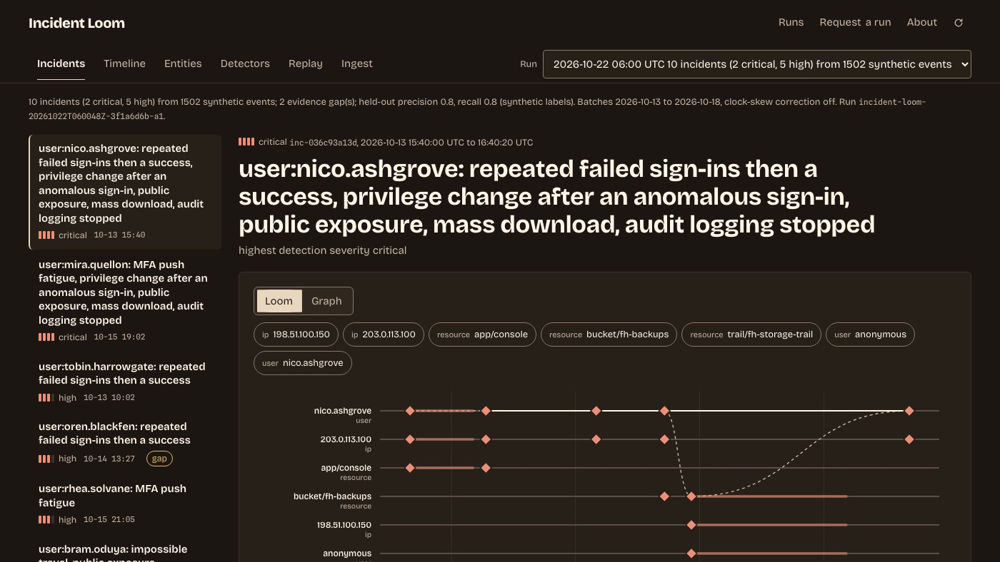

Python · Security analytics · 2026-10
Incident Loom
A replayable security-log investigation: six synthetic append-only batches, eight correlation rules, and incident timelines where every hypothesis cites its evidence and every gap lowers confidence.

- Problem
- A security investigation is a story told from logs, and a story is only as good as its evidence. Logs arrive late, out of order, duplicated across deliveries and with each source's clock a…
- Role
- Built and written by Rishit Raj Mathur; the case study names its sources and checks.
- Tools
- Python, Log normalization, Correlation rules, Held-out evaluation, GitHub Actions, React, Vite, TypeScript
- Status
- Case study with a live demo; last push 2026-10-22
- Evidence
- Browse the investigations · Code on GitHub

- Repository
- github.com/mrrishit909/incident-loom
- Commits
- 7
- Last push
- 2026-10-22
- Created
- 2026-10-22
- Languages
- Python 71%, TypeScript 23%, CSS 5%
Every log record, user, host and address is synthetic (documentation address ranges, a fictional organisation). The precision and recall figures are against labels written by the same author as the detectors, so they show the evaluation works, not how the rules would do on real logs.
01The problem
A security investigation is a story told from logs, and a story is only as good as its evidence. Logs arrive late, out of order, duplicated across deliveries and with each source's clock a little off; a source can go silent for an hour and nobody notices. The question here is whether an investigation can be made replayable: every incident linked to the exact events behind it, alternatives stated, and silence treated as a gap that lowers confidence rather than as good news.
02What I built
A Python investigation engine, a GitHub-native run harness and a static workspace:
- Six synthetic daily batches from four sources (identity sign-ins, cloud audit, host authentication, resource access) with injected anomalies, benign admin activity, duplicates, out-of-order records, clock skew, a declared gap and malformed records; labelled development and held-out scenarios.
- Ingestion: parsing, normalization to one event schema, clock-skew correction per source, deduplication across deliveries, quarantine with reasons, checkpoint and restart.
- Eight correlation rules with documented thresholds.
- Investigation: incidents with evidence-linked timelines, causal and temporal links, hypotheses, alternatives, gaps and a correlation graph.
- Held-out evaluation, the only code that reads the labels.
- The loom: a workspace that draws one thread per entity, a knot per event group, solid links for shared ids, dashed links for order only, and frayed threads where a source was silent.
03How it was built
- 01
Generate batches that misbehave on purpose
python -m incidentloom fixtureswrites six append-only daily batches with the problems real pipelines meet: duplicate deliveries, out-of-order records, a declared host-log gap, a silent resource-log window, malformed lines and a per-source clock offset. Scenarios are split into development (used to set thresholds) and held-out (used only to score). - 02
Normalize, correct the clocks, deduplicate, quarantine
Every record is parsed to one event schema and shifted by its source's declared clock offset. Deduplication keeps the first delivery; a later delivery that reuses a record id with different content is quarantined as a conflict, not merged. Records more than 72 hours late or more than 30 minutes early for their batch are quarantined too, and every window is stated in
ingest.json. - 03
Flag patterns with eight rules
Eight correlation rules with documented thresholds turn events into detections. Thresholds were chosen by inspecting the development scenarios, not by an automated sweep, and the README says so; four rules have a single development case.
- 04
Weave detections into incidents
Detections are grouped by primary entity within 24 hours into incidents. Each gets an evidence-linked timeline, links between events (same actor, within 24 hours by session or request id, or 8 hours by process or parent id), hypotheses that cite their events, alternative explanations, and the evidence gaps that lower confidence.
- 05
Stop after any batch, resume without changing a byte
A run checkpoints after each batch and can be resumed from there. The replay view and the ingest accounting show that resuming changes no evidence.
- 06
Score only on held-out scenarios
evaluate.pyis the one module allowed to read the labels. It scores the detectors on eight held-out synthetic scenarios and reports the misses by name: one designed false positive, one slow password spray not caught.
04Results
| All six batches, skew correction on | Count |
|---|---|
| Records received | 1,534 |
| Events accepted | 1,502 |
| Duplicate deliveries merged | 19 |
| Records quarantined | 13 |
| Out of order | 9 |
| Detections | 20 |
| Incidents (2 critical, 5 high, 3 medium) | 10 |
| Evidence gaps | 2 |
| Held-out precision | 0.8 |
| Held-out recall | 0.8 |
The two gaps (one declared host-log gap, one silent resource-log window) each lower the confidence of the hypotheses that depend on them. The held-out scores come from labels written by the detectors' author: they show that the evaluation pipeline works, not how the rules would perform on real logs.
05What I'd do next
- Sweep thresholds automatically against a larger set of development scenarios instead of choosing them by inspection.
- Calibrate the confidence rule, which is a documented but uncalibrated point rule today.
- Group incidents so that a spray address and its targets can share one incident, and run the optional AI grader once an inference secret is configured.